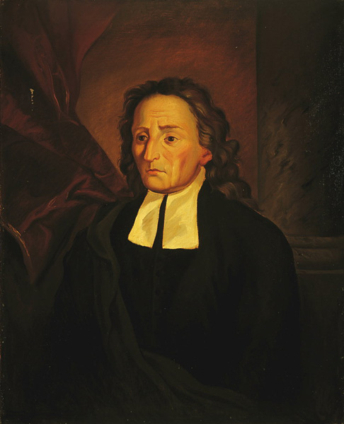
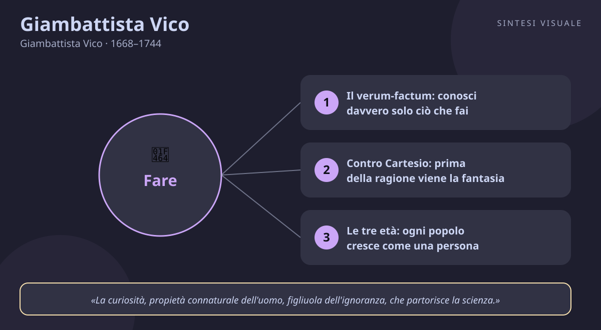

Home / Filosofi / Giambattista Vico

Giambattista Vico
Giambattista Vico · 1668–1744
«Il vero è ciò stesso che si è fatto»
- Verum-factum
- Storia
- Fantasia
- Ricorsi
💬La massima
«Verum ipsum factum» — il vero è ciò stesso che si è fatto.
— Giambattista Vico, De antiquissima Italorum sapientia, 1710 (libro I, cap. 1)
Sembra una formula in latino da addetti ai lavori, ma è una bomba contro tre secoli di filosofia. Vico osserva una cosa semplice: nelle parole latine verum (il vero) e factum (il fatto, ciò che è stato fatto) vive lo stesso senso, e i due termini «si convertono» l'uno nell'altro (verum et factum convertuntur). Il ragionamento è questo: si conosce davvero solo ciò che si è fatto, perché solo facendolo se ne possiede la genesi, il «come è venuto al mondo». Dio conosce perfettamente la natura perché l'ha creata; l'uomo, che la natura non l'ha fatta, può descriverla dal di fuori ma non «intenderla» fino in fondo. In compenso esiste un mondo che l'uomo ha fatto davvero: il mondo civile — leggi, lingue, religioni, istituzioni — e quello sì possiamo conoscerlo dal di dentro, perché ne ritroviamo i princìpi dentro le modificazioni della nostra stessa mente. Di qui la conseguenza che rovescia Cartesio: la matematica è certissima non perché rispecchia il mondo, ma perché i suoi oggetti li costruiamo noi; e la storia non è una raccolta di aneddoti, ma la scienza più umana che ci sia, perché studiarla significa ricostruire attivamente come gli uomini hanno costruito se stessi.
👤Biografia
Giambattista Vico nasce a Napoli il 23 giugno 1668, figlio di un libraio con una bottega povera e di una famiglia numerosa. Da bambino cade da una scala e batte la testa: resta in pericolo per anni, e lui stesso racconterà che da quella ferita gli venne un carattere «malinconico ed acre», adatto — diceva — a chi deve meditare. Studia dai gesuiti a singhiozzi, insofferente alle lezioni, e si forma da solo sui grandi libri. Tra i diciotto e i ventisette anni vive quasi da eremita a Vatolla, in Cilento, come precettore dei figli del marchese Rocca: nove anni di studi solitari in un castello sperduto, tra Platone, Agostino, Tacito e Grozio.
Tornato a Napoli, nel 1699 vince il concorso per la cattedra di eloquenza e retorica all'Università, ma resta per tutta la vita un professore malpagato e trascurato: quando concorre alla più prestigiosa cattedra di diritto del mattino, viene scavalcato. Sposa Teresa Destito, ha otto figli e vive tra stenti e fatiche tipografiche, correggendo i propri libri fino all'ultima edizione. Scrive di notte, orgoglioso e solitario, convinto che i contemporanei non lo capiscano — e in effetti la Scienza nuova (1725) passa quasi inosservata. Muore a Napoli il 23 gennaio 1744, assistito dal figlio Gennaro, lasciando manoscritti e una fama che esploderà solo un secolo dopo.
Di carattere era fiero, permaloso e tenace: polemista contro i cartesiani napoletani, cattolico devoto ma pensatore liberissimo, padre affettuoso e professore appassionato che trasformava le prolusioni universitarie in manifesti filosofici.
📌Sintesi del pensiero
Vico rovescia il primato cartesiano della matematica: conoscere davvero significa sapere come una cosa è stata fatta, e poiché la natura l'ha fatta Dio, l'uomo la conosce solo dal di fuori; il mondo civile — lingue, miti, leggi, istituzioni — l'ha fatto l'uomo, ed è quindi la vera patria della scienza. Ogni nazione attraversa una «storia ideale eterna» in tre età (degli dèi, degli eroi, degli uomini) e può ricadere nella barbarie: sono i corsi e ricorsi. Una Provvidenza immanente volge perfino le passioni egoistiche a fini di civiltà.
🏛️I temi fondamentali
- Il verum-factum: conosci davvero solo ciò che fai. È il cuore di tutto. Sapere non è rispecchiare il mondo come uno specchio, ma saper rifare il percorso con cui una cosa è nata. Per questo un ingegnere capisce un ponte meglio di chi lo fotografa: lo ha progettato, ne conosce la genesi. Esempio concreto: non impari davvero una lingua studiando le tabelle dei verbi, ma quando cominci a costruirci frasi tue, sbagliando e correggendoti — la conoscenza nasce dal fare, non dal guardare.
- Contro Cartesio: prima della ragione viene la fantasia. I primi uomini non ragionavano per concetti: atterriti dal tuono, immaginarono un corpo immenso che parlava dal cielo e lo chiamarono Giove. Sono gli «universali fantastici»: la poesia è più antica della logica, e il mito non è una bugia ma la prima forma di pensiero. Esempio concreto: i bambini che animano i peluche e parlano con loro non stanno «sbagliando», stanno ripetendo il gesto originario dell'umanità — dare senso e passione alle cose insensate per poterle capire.
- Le tre età: ogni popolo cresce come una persona. Tutte le nazioni attraversano l'età degli dèi (teocrazie, oracoli, riti), l'età degli eroi (aristocrazie, duelli, imprese) e l'età degli uomini (repubbliche, leggi uguali, ragione). Come il singolo passa dal sentire infantile alla fantasia giovanile alla riflessione adulta, così i popoli cambiano lingua, diritto e governo al cambiare della loro mente. Esempio concreto: una startup nasce con il culto del fondatore-oracolo, passa alla fase degli «eroi» dirigenti con i loro feudi, e matura (se matura) in regole uguali per tutti — stessa legge, in piccolo.
- Corsi e ricorsi: la storia non marcia dritta verso il progresso. Quando l'età della ragione si corrompe — lusso, cinismo, leggi usate come armi private — le nazioni ricadono in una «barbarie della riflessione», peggiore di quella primitiva perché armata di intelligenza. La storia allora «ricorre»: non si ripete uguale, ma riattraversa le stesse forme. Esempio concreto: una democrazia stanca, dove il dibattito diventa insulto organizzato e le istituzioni vengono usate contro gli avversari, sta vivendo un ricorso — e Vico direbbe di guardare a come ne uscirono (o non ne uscirono) le repubbliche antiche.
- Provvidenza e senso comune: l'ordine nasce anche senza progetto. Gli uomini seguono fame, paura, desiderio e avidità, eppure da questi vizi nascono famiglie, commerci, tribunali e stati: la Provvidenza — che opera attraverso il «senso comune», le credenze condivise — volge i fini privati a fini di civiltà. È l'eterogenesi dei fini tre secoli prima del nome. Esempio concreto: nessuno ha «progettato» le regole di buona educazione in coda alla posta, eppure esistono e funzionano: nate dall'interesse di ciascuno a non litigare, tengono in piedi un ordine che nessuno ha disegnato.
📚Le opere principali
- De antiquissima Italorum sapientia (1710). Il libro della massima: scavando nelle origini del latino, Vico enuncia il principio verum-factum e attacca la metafisica di Cartesio. Tesi centrale: il vero e il fatto si convertono, quindi l'uomo conosce a fondo solo ciò che produce. Conta perché è la carta d'identità di tutto il pensiero vichiano.
- Il diritto universale (De universi iuris uno principio et fine uno, 1720; De constantia iurisprudentis, 1721). La storia del diritto come cammino della giustizia: dal diritto violento delle origini al diritto mite dei tempi umani. Tesi centrale: il diritto non è un comando arbitrario ma lo sviluppo storico di un principio razionale e provvidenziale. Conta perché prepara la Scienza nuova e fonda la filosofia della storia del diritto.
- Principj di Scienza nuova (1725; seconda edizione 1730; terza e definitiva 1744, postuma). Il capolavoro: la scienza del mondo delle nazioni, con le Degnità, le tre età, i corsi e ricorsi. Tesi centrale: il mondo civile è fatto dagli uomini e perciò se ne possono ritrovare i princìpi nella mente umana. Conta perché è il libro che ha inventato la filosofia della storia, l'antropologia culturale e la sociologia prima dei loro nomi.
- Vita di Giambattista Vico scritta da se medesimo (composta 1725-1728, pubblicata 1728). L'autobiografia filosofica: non confessioni intime, ma il racconto di come un metodo di pensiero è nato da una vita di studi solitari. Tesi centrale: la filosofia si capisce dalla formazione di chi la pensa. Conta perché è una delle prime vere autobiografie intellettuali d'Europa e la fonte principale sulla sua vita.
💬Massime celebri
«La curiosità, propietà connaturale dell'uomo, figliuola dell'ignoranza, che partorisce la scienza.» (Scienza nuova, 1744, Degnità). Conta perché nobilita l'ignoranza: non è la certezza a farci scoprire il mondo, ma la meraviglia davanti a ciò che non capiamo — dal fulmine di Giove alle comete.
«Gli uomini prima sentono senza avvertire; dappoi avvertiscono con animo perturbato e commosso, finalmente riflettono con mente pura.» (Scienza nuova, 1744, Degnità LIII). Conta perché in una riga c'è tutta l'antropologia di Vico: il pensiero nasce dal corpo e dalle passioni, e la ragione pura arriva per ultima, non per prima.
«Questo mondo civile egli certamente è stato fatto dagli uomini, onde se ne possono, perché se ne debbono, ritruovare i principi dentro le modificazioni della nostra medesima mente umana.» (Scienza nuova, 1725). Conta perché è il manifesto del metodo: la storia è conoscibile proprio perché è opera nostra.
⌛Contesto storico
Vico nasce a Napoli nel 1668, capitale di un viceregno spagnolo in declino: una metropoli affollata e splendida, piena di conventi, tribunali e librerie, ma governata da lontano e scossa da rivolte — quella di Masaniello del 1647 è ancora un ricordo vivo. La Controriforma detta i confini del pensabile: l'Inquisizione sorveglia i libri, eppure circola di tutto, da Lucrezio agli scienziati nuovi.
Mentre Vico cresce, l'Europa cambia pelle. Nel 1687 Newton pubblica i Principi matematici, nel 1690 Locke il Saggio sull'intelletto umano: la fisica e l'empirismo promettono un mondo interamente spiegabile con metodo e calcolo. A Napoli i cartesiani — Valletta, D'Andrea, Di Capua, l'Accademia degli Investiganti — vogliono spazzare via Aristotele e la scolastica; i tradizionalisti resistono. Nel 1707 gli austriaci prendono Napoli nel pieno della guerra di successione spagnola, e nel 1734 arriva Carlo di Borbone: tre regimi in una vita sola, mentre il Vesuvio, le carestie e la peste ricordano quanto la natura comandi ancora.
È l'alba dell'Illuminismo, ma Vico ne è la contro-voce: diffida della ragione che pretende di spiegare tutto con geometria e meccanicismi.
I movimenti che lo hanno influenzato, esplicitamente: l'umanesimo retorico e Cicerone (l'eloquenza come sapere civile), Platone e Agostino (la Provvidenza che guida la storia), Tacito (la politica vista dal vero, tra interessi e passioni), Grozio e il giusnaturalismo (il diritto delle genti), Bacone (il progetto di una grande scienza nuova) — e il cartesianesimo, come avversario decisivo: Vico si definisce opponendosi a Cartesio. I movimenti che ha trasmesso: lo storicismo tedesco (Herder, e per suo tramite temi che arriveranno fino a Hegel), la storiografia romantica francese con Michelet che lo traduce, la critica dell'economia politica (Marx ne ammira la storia delle istituzioni), il neoidealismo italiano (Croce gli dedica nel 1911 il libro che lo rilancia, Gentile lo segue), e nel Novecento l'ermeneutica di Gadamer, la filosofia delle forme simboliche di Cassirer, l'antropologia culturale e Isaiah Berlin.
🌊L'eredità
Snobbato dai contemporanei — la Scienza nuova vende poche copie e i letterati napoletani lo trattano da stravagante — Vico resuscita nell'Ottocento: lo traduce e lo celebra Michelet in Francia, lo studiano Herder e i romantici tedeschi come il profeta della storia dei popoli, Marx ne loda la capacità di leggere le istituzioni come opera umana. Ma la vera resurrezione è italiana e novecentesca: Benedetto Croce, con La filosofia di Giambattista Vico del 1911, ne fa il padre dell'idealismo storico, e Giovanni Gentile lo pone all'origine del pensiero nazionale. Da lì Vico non si ferma più: Erich Auerbach ne ricava il metodo per leggere la letteratura come documento di civiltà, Gadamer lo arruola contro il metodo unico delle scienze naturali, Cassirer ci trova l'antenato della filosofia del mito e del simbolo, Isaiah Berlin lo celebra come il primo pluralista, il pensatore che capì che ogni cultura ha un suo centro e non si giudica con il metro delle altre. Oggi pedagogisti, antropologi, storici delle religioni e teorici della narrazione lo citano come un contemporaneo: il professore povero di Napoli è diventato il patrono di tutte le scienze umane.
🌍Esempi di oggi
- Il tutorial di cucina che guardi e riguardi. Puoi vedere dieci video sulla pasta fatta in casa e sentirti esperto, ma la prima volta che impasti capisci che non sapevi nulla: quanta acqua prende davvero la farina lo imparano le mani, non gli occhi. Vico annuirebbe: il video ti mostra il fatto dal di fuori, le mani lo rifanno dal di dentro — e solo lì nasce il vero sapere.
- Il bambino che dà un nome al peluche e lo sgrida. «Orsetto è stato cattivo, va in castigo»: un adulto sorride, Vico no. Il bambino sta usando un universale fantastico, proprio come i primi uomini con Giove — anima le cose per capirle e per regolarci i conti. Le pubblicità lo sanno benissimo: danno un volto e un carattere a un'auto o a un formaggio perché la fantasia vende prima che la ragione confronti i prezzi.
- Il gruppo di quartiere che si dà delle regole da solo. Nessun sindaco ha ordinato agli abitanti di quel palazzo di turnarsi per pulire le scale o di spegnere la musica a mezzanotte: è nato da liti, assemblee e compromessi, e ora funziona meglio di molti regolamenti comunali. È il mondo civile di Vico in miniatura: un ordine fatto dagli uomini per i loro bisogni, conoscibile solo da chi ci vive dentro — e fragile come tutte le età dell'uomo, perché basta una stagione di maleducazione diffusa per farlo «ricorrere» al caos.
📄
# Giambattista Vico — «Il vero è ciò stesso che si è fatto»
Buongiorno! Oggi incontriamo il napoletano che osò dire a Cartesio «ti sbagli»: mentre l'Europa si inginocchiava davanti alla matematica e alla fisica, Giambattista Vico — professore di retorica povero in canna, malinconico e testardo — sosteneva che la storia, i miti e le leggi raccontano la verità meglio delle formule. Il ritratto qui sopra (olio del Settecento dall'ambiente di Francesco Solimena) lo mostra in parrucca e veste scura, con lo sguardo assorto di chi ha passato la vita a decifrare il passato per capire il presente.
🧠Quiz
Rispondi in chat con es. 1B 2A 3C 4D 5A (usa «-» per le risposte che salti, es. 1B 2- 3C 4A 5D):
1 Che cosa afferma il principio verum-factum?
2 Perché, per Vico, la matematica è una scienza certissima?
3 Che cosa sono gli «universali fantastici»?
4 Che cosa sono i «corsi e ricorsi»?
5 Quale ruolo ha la Provvidenza nella storia secondo Vico?
✅Soluzioni — tocca per vedere
1B – 2C – 3B – 4C – 5C. Il vero è ciò che si fa (1B); la matematica è certa perché costruita da noi (2C); gli universali fantastici sono il primo pensiero poetico-mitico (3B); corsi e ricorsi descrivono il ciclo delle età e le ricadute nella barbarie (4C); la Provvidenza volge i fini privati a fini civili (5C).
🔁Ripasso
- Verum-factum: conoscere non è fotografare il mondo da fuori, ma saper ricostruire come una cosa è stata fatta. Per questo il mondo civile (lingue, leggi, miti) è più conoscibile della natura: lo abbiamo fatto noi.
- Universali fantastici e tre età: prima si immagina (Giove nel tuono), poi si ragiona; popoli e individui crescono dal sentire alla fantasia alla riflessione. Il mito non è menzogna, è la prima scienza.
- Corsi, ricorsi e Provvidenza: la storia non avanza in linea retta: può marcire nella «barbarie della riflessione» e ricominciare. Eppure dal disordine degli interessi, tramite il senso comune, nasce quasi sempre un ordine nuovo.
🖼️In un colpo d’occhio

Tocca l’immagine per ingrandirla.